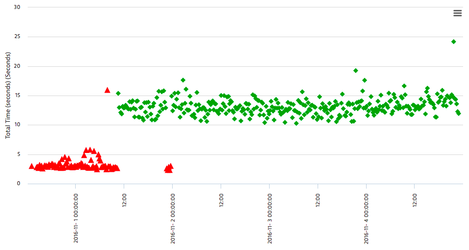

The Proof
For this company, I had been telling them about an issue on their page, which shows up as errors (red triangles) on the scatterplot of our synthetic testing data. After finally believing me that it was a legitimate problem, they made a fix on their end, and suddenly we started getting successes again.
Sometimes I even get thanked for my work. This person from this redacted company really loves me, and I get several "thank you" emails each day. Am I beloved? Well, I don't like to say so. But yes.